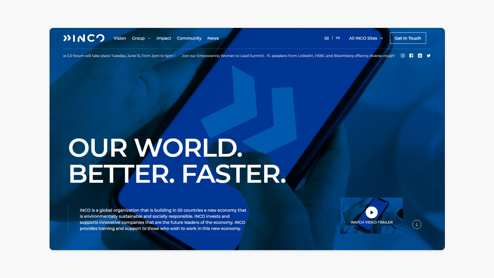
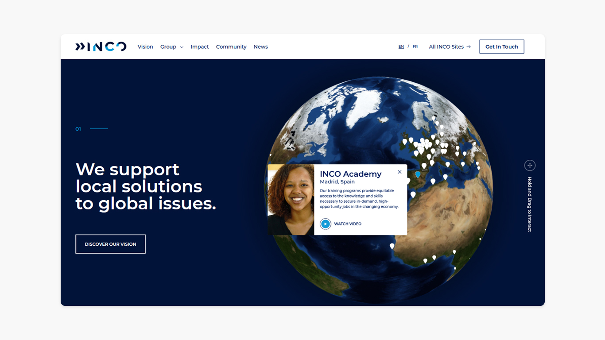
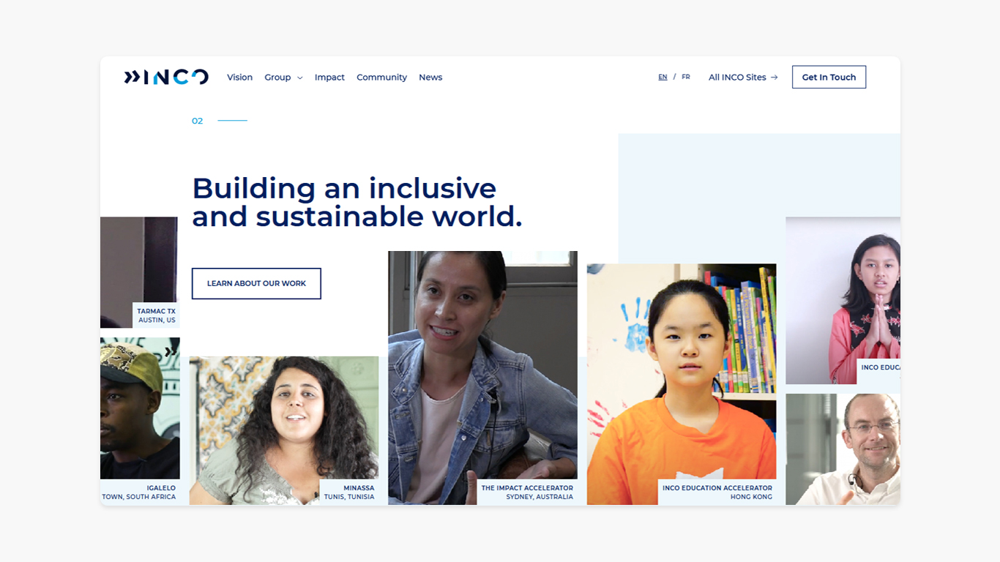
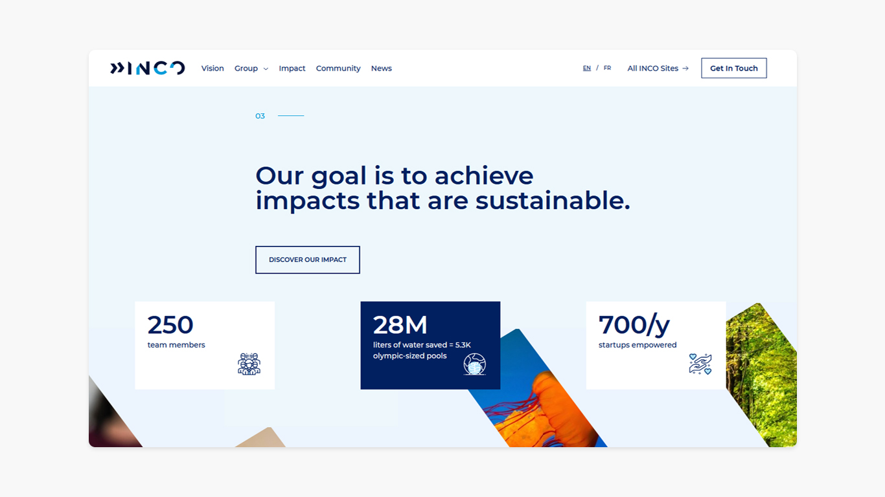
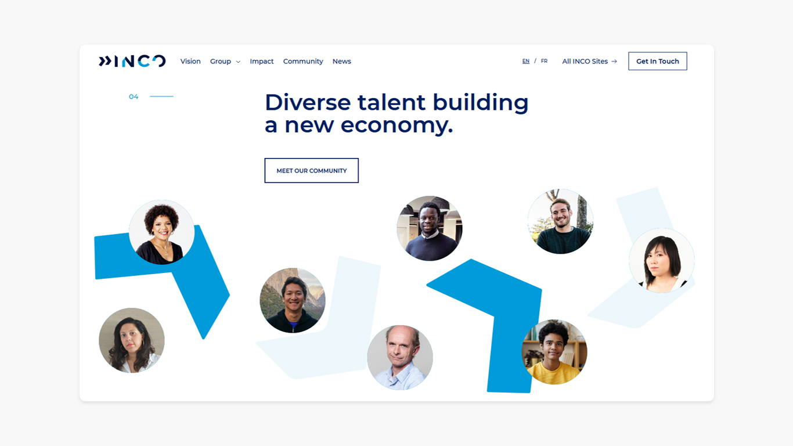
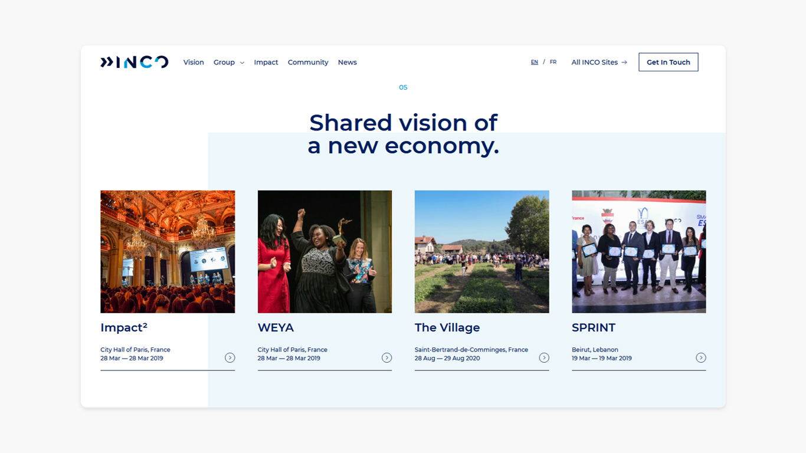
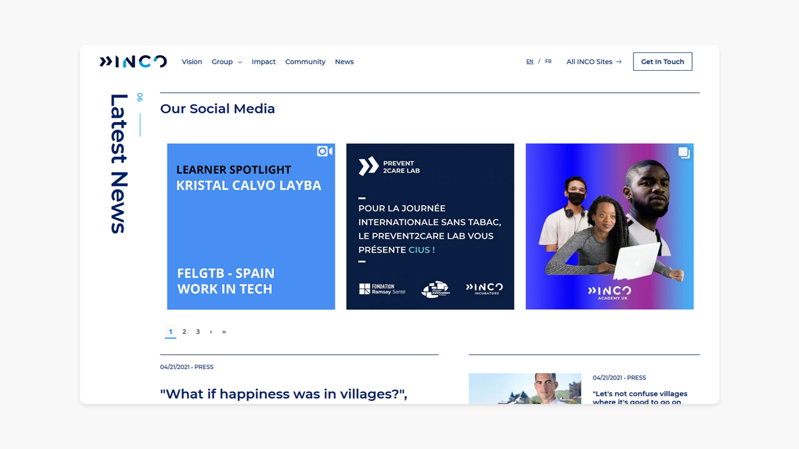

INCO ORG


INCO Ventures
INCO
Brand Design
Fast Forward
INCO est un groupe mondial qui construit une nouvelle économie, écologique et solidaire dans 50 pays, grâce à ses branches tels que INCO Ventures qui investit et soutient les entreprises innovantes, futurs leaders de cette économie, et ainsi que INCO ORG qui forme et accompagne vers l'emploi tous ceux qui souhaitent exercer un des métiers de demain.
1er "designer-maison"
INCO travaillaient depuis pas mal de temps avec des prestataires externes et ont décidé d'internaliser avec une création de poste : j'ai donc rejoint et fondé le pôle Création en Juillet 2019, avec pour but de produire quotidiennement tous types de contenu créatif (site internet, identité visuelle, visuels réseaux sociaux, montage / captation vidéo, mise en page), sur une échelle internationale.
Comment produire du contenu pour 50 pays chaque jour ?
Pour chaque création de programme, que cela soit de l'incubation (INCO Incubators) ou de la formation (INCO Academy), mon rôle était de créer une identité visuelle, la décliner en un site internet (sur Wix) et l'adapter à la production de visuels et vidéos pour nos réseaux sociaux. Tout en faisant valider avec le partenaire (public et/ou privé) qui finançait le projet. Voici un récapitulatif de mes missions :
• Organisation de la refonte du site internet inco-group.co (UI & Dev par papertiger.com)
• Création des identités visuelles de nos programmes (+30 logos)
• Design des sites internet de nos programmes sur Wix (+20 sites)
• Création de visuels et vidéos format "snack-content" pour nos réseaux sociaux (chaque jour)
• Captation vidéo / Montage de nos entrepreneurs & partenaires (+ 25 interviews à travers la France)
Pourquoi avoir quitté INCO ?
J'ai toujours baigné dans les startups et souhaitais découvrir le milieu des agences / studios. Et surtout, je souhaitais apprendre créativement dans une team de designers, avec des seniors pour me faire évoluer.